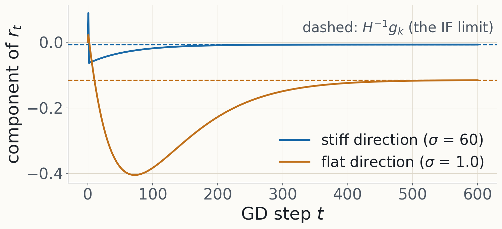
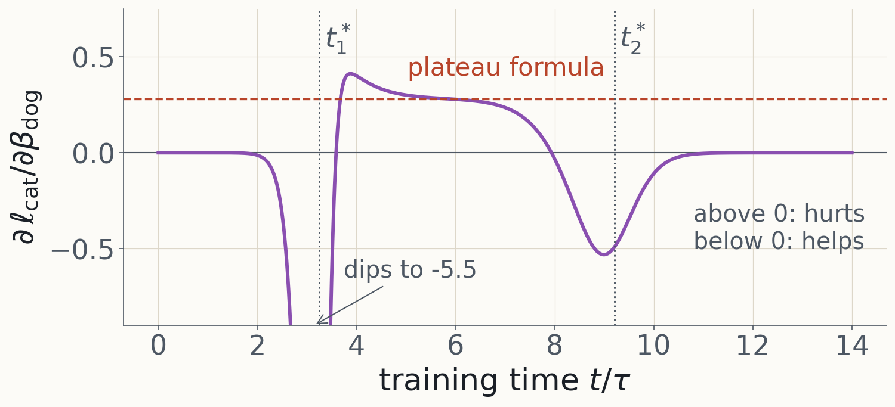

Data attribution · the notes, derived
Data (Attribution) for Alignment, step by step
A derivation-by-derivation companion to Louis Jaburi's Iliad notes
Primary source: iliad-intensive.org/learning/data-attribution (PDF ). Slide eyebrows give the section, definition or exercise in the notes.
Backup for a guided derivation of the notes. Each slide is one step; the eyebrow names the place in the notes (PDF numbering), so you can jump to any exercise from the overview (O).
Where a statement in the notes needs fixing, the slide shows the corrected version and the notes below the slide start with "Correction:". Most are sign, normalisation or scope issues; none changes the big picture. Full ledger: DA_SPECS_v1.md, E1 to E13.
§5 and §6 of the notes are stubs, so the deck ends with §4.
The route through the notes
One derivative, three readings of "the trained model"
§1
Which examples caused this behaviour?
→
$\dfrac{\partial\,\phi(\pi(\beta))}{\partial\beta_i}\Big|_{\beta=\mathbf 1}$
§2 Influence functions
$\pi(\beta)=w^*(\beta)=\operatorname*{arg\,min}_w L(w;\beta)$
§3 Bayesian IFs
$\pi(\beta)=p_\beta$, a posterior; read off $\mathbb E_{p_\beta}[\phi]$
§4 Unrolling
$\pi(\beta)=w_T(\beta)$, the last iterate of the actual run
The notes' own framing (§1.4): every method is an estimator of this derivative, and they differ in what π means. The three long exercises (3.2, 3.3, 4.2) then show that the other two readings reduce to the IF in the right limit.
Conventions used on every slide
Summed loss, data weights, upweighting sign
$$L(w;\beta)=\sum_{i=1}^n\beta_i\,L(w,z_i),\qquad L(w)=L(w;\mathbf 1),\qquad H=\nabla_w^2L(w^*)$$
All derivatives are at $\beta=\mathbf 1$. $\mathcal I=\partial/\partial\beta_i$ is the effect of upweighting ; deleting $z_i$ is $\beta_i:1\to0$, so to first order it changes things by $-\mathcal I$.
SGD in §4 averages over the minibatch: $\frac{\eta_t}{b}\sum_{i\in B_t}$.
$g_i=\nabla_wL(w^*,z_i)$, $\;g_\phi=\nabla_w\phi(w^*)$.
Correction (E1): §1.4 of the notes defines the mean loss $\frac1n\sum_i\beta_iL_i$, and from §2 on the notes use the sum. We use the sum throughout, as the derivations do. Nothing changes except where $1/n$ goes: with the mean loss, $\partial w^*/\partial\beta_i=-\frac1n\bar H^{-1}g_i$ with $\bar H=H/n$, the same vector.
§1.1 · The question
Which training examples caused a model to behave the way it does?
Mech interp: causal analysis of a forward pass. Data attribution: causal analysis of a training run.
Two asymmetries from §1.1: both inherit the general difficulties of causal reasoning; and a forward pass is cheap to ablate while a training run usually can't be repeated even once.
§1.2 · Definition 1.1
Counterfactual attribution
The simple counterfactual test (after Lewis 1973): $B$ depends on $A$ if, had $A$ not occurred, $B$ would not have occurred. Graded version: attribute $B$ to $A$ iff
had $A$ occurred, $B$ would have occurred to a higher degree;
had $A$ not occurred, $B$ would have occurred to a lesser degree.
For data, "$A$ not occurring" is deleting $z_i$: the leave-one-out (LOO) counterfactual.
Mueller (2024) is the source for both failure modes on the next two slides. Lewis's full account of causation also allows chains of such dependence; the slide's test is direct dependence, which is what LOO measures.
§1.2 · Example 1.2 · Overdetermination
OpenCroissant: two sufficient causes
Steam leavening Premium butter alone gives exceptional fluffiness.
Biological leavening Premium yeast alone gives exceptional fluffiness.
$$v(S)=\mathbf 1\big[\text{butter}\in S\ \text{or}\ \text{yeast}\in S\big],\qquad v(\text{all})-v(\text{all}\setminus\{\text{butter}\})=1-1=0$$
LOO gives butter and yeast zero credit, though each was a cause.
In learning: once a behaviour has saturated, extra examples supporting it look causally irrelevant one at a time.
§1.2 · Example 1.3 · Non-transitivity
Counterfactuals do not chain
(A) a boulder rolls
→
(B) the hiker dodges
→
(C) the hiker is unharmed
A caused B, and B caused C, counterfactually.
A did not cause C: with or without the boulder, she is unharmed.
In training: an example can induce a feature that drives a capability, and still fail the end-to-end LOO test.
Ned Hall's example, via Hitchcock (2001). Methods that look only at marginal end-to-end effects miss the mediation.
§1.3 · Definition 1.4
Shapley value: average the marginal effect over coalitions
$$\varphi_i(v)=\frac1n\sum_{S\subseteq[n]\setminus\{i\}}\binom{n-1}{|S|}^{-1}\big(v(S\cup\{i\})-v(S)\big)$$
Equivalently: order the players at random; $\varphi_i$ is the mean of $v(\text{players before }i\text{, plus }i)-v(\text{players before }i)$.
Why the two forms agree: a coalition $S$ of size $s$ precedes $i$ in a uniformly random order with probability $\frac{s!\,(n-1-s)!}{n!}=\frac1n\binom{n-1}{s}^{-1}$.
§1.3 · Shapley on the croissant
Each leavener gets half the credit
$$v(S\cup\{\text{butter}\})-v(S)=\mathbf 1[\text{yeast}\notin S]$$
$$\varphi_{\text{butter}}=\Pr[\text{butter comes before yeast}]=\tfrac12,\qquad \varphi_{\text{yeast}}=\tfrac12,\qquad \varphi_{\text{flour}}=\varphi_{\text{sugar}}=0$$
$$\text{Check with the formula: }\ \tfrac14\Big(\tbinom30^{-1}+2\tbinom31^{-1}+\tbinom32^{-1}\Big)=\tfrac14\big(1+\tfrac23+\tfrac13\big)=\tfrac12$$
The formula sum runs over the four subsets $S\subseteq\{\text{flour},\text{sugar}\}$ (yeast must be absent), with sizes 0, 1, 1, 2. The credits add to $v(\text{all})-v(\varnothing)=1$ (efficiency).
§1.3 · Remark
Shapley still dilutes credit, and costs $2^n$ retrainings
Each leavener was sufficient, so one could argue each deserves full credit, not half.
$v(S)$ for every subset of a training set means retraining on $2^n$ subsets.
From here on: local, first-order questions about the one run we have.
§1.4 · Notation and goals
Data weights turn deletion into a derivative
Data $\mathcal D=\{z_i\}_{i=1}^n$, $z_i=(x_i,y_i)$; model $f_w$, $w\in\mathbb R^{d_p}$; per-example loss $L(w,z_i)=\ell(f_w(x_i),y_i)$.
Data weights $\beta\in\mathbb R^n$; weighted loss $L(w;\beta)=\sum_i\beta_iL(w,z_i)$.
The behaviour: a differentiable scalar $\phi:W\to\mathbb R$ (a test loss, a logit, a task average).
$$\beta\ \xmapsto{\ \pi\ }\ \text{``}w(\beta)\text{''}\ \xmapsto{\ \phi\ }\ \phi(w(\beta)),\qquad \boxed{\ \frac{\partial\,\phi(\pi(\beta))}{\partial\beta_i}\bigg|_{\beta=\mathbf 1}\ }$$
Parameter influence (how $\pi$ moves) times the gradient of $\phi$ (how that matters).
The notes are deliberately vague about π here; §§2–4 each pick one. The derivative is a first-order stand-in for LOO ($\beta_i=0$), which is one unit step away from $\mathbf 1$: that gap is the subject of Exercise 2.2.
§2 · Influence functions
$\pi(\beta)=w^*(\beta)$: how does the optimum move?
Robust statistics (Hampel 1974; Cook 1977): which observations is an estimate most sensitive to?
§2.1 · Example 2.1
Influence on the mean
Put a fraction $\epsilon$ of the mass at $z$:
$$T\big((1-\epsilon)F+\epsilon\delta_z\big)=(1-\epsilon)\,\mathbb E_F[z]+\epsilon z=T(F)+\epsilon\,\big(z-T(F)\big)$$
Rate of change at $\epsilon=0$: $z-T(F)$. Far-out points move the mean most.
$$\text{Same thing with data weights: } w^*(\beta)=\operatorname*{arg\,min}_w\sum_j\beta_j\tfrac12(w-z_j)^2=\frac{\sum_j\beta_jz_j}{\sum_j\beta_j},\qquad \frac{\partial w^*}{\partial\beta_i}\Big|_{\mathbf 1}=\frac{z_i-\bar z}{n}$$
The last line is our bridge to Definition 2.2: here $H=n$ and $g_i=\bar z-z_i$, so $-H^{-1}g_i=(z_i-\bar z)/n$. Keep it in mind as a sanity check of the sign.
§2.1 · Definition 2.2
The influence function
Assume $w^*=w^*(\mathbf 1)$ is the unique global minimum and $H=\nabla_w^2L(w^*)\succ0$. Then
$$\mathcal I_{\mathrm{param}}(z_i):=\frac{\partial w^*(\beta)}{\partial\beta_i}\bigg|_{\beta=\mathbf 1}=-H^{-1}\nabla_wL(w^*,z_i)$$
$$\mathcal I(z_i,\phi):=\frac{\partial\,\phi(w^*(\beta))}{\partial\beta_i}\bigg|_{\beta=\mathbf 1}=-\nabla_w\phi(w^*)^\top H^{-1}\nabla_wL(w^*,z_i)$$
Next four slides: Exercise 2.1, the derivation.
§2.1 · Exercise 2.1(a)
The implicit function theorem gives a smooth branch
$$F(w,\beta):=\nabla_wL(w;\beta)=\sum_j\beta_j\nabla_wL(w,z_j),\qquad F(w^*,\mathbf 1)=0$$
$\partial F/\partial w$ at $(w^*,\mathbf 1)$ is $H$. Invertible $H$ is the IFT's hypothesis.
So near $\mathbf 1$ there is a unique $C^1$ branch $\beta\mapsto w^*(\beta)$ of critical points with $F(w^*(\beta),\beta)\equiv0$.
$H\succ0$ makes it a branch of local minima. Calling it the argmin also needs the global minimizer to stay on this branch as $\beta$ moves (no jump to another basin).
Correction (E12): the IFT itself only needs a nondegenerate critical point. Uniqueness of the global minimum at $\beta=\mathbf 1$ alone doesn't identify the branch with $\operatorname{arg\,min}$ for nearby $\beta$ (the perturbed infimum can escape to infinity); that needs stability of the global minimizer under the perturbation. For small perturbations an isolated strict local minimum is enough if we define $w^*(\beta)$ as the nearby minimizer, which is what is computed in practice.
§2.1 · Exercise 2.1(b)
Differentiate the optimality condition
$$\nabla_wL\big(w^*(\beta);\beta\big)\equiv0\quad\Longrightarrow\quad \underbrace{\nabla_w^2L(w^*;\beta)\,\frac{\partial w^*}{\partial\beta_i}}_{\text{indirect: }w^*\text{ moves}}+\underbrace{\nabla_wL(w^*,z_i)}_{\text{direct: }\partial/\partial\beta_i\text{ of }\sum_j\beta_j\nabla L_j}=0$$
$$\frac{\partial w^*}{\partial\beta_i}\bigg|_{\beta=\mathbf 1}=-H^{-1}\nabla_wL(w^*,z_i)$$
$\beta$ enters twice: through the first slot, via $w^*(\beta)$, and directly, as the coefficient $\beta_i$. Holding $w$ fixed, $\partial_{\beta_i}\sum_j\beta_j\nabla L_j=\nabla L_i$.
§2.1 · Exercise 2.1(c)
Chain rule to the observable
$$\mathcal I(z_i,\phi)=\nabla_w\phi\big(w^*(\beta)\big)^\top\frac{\partial w^*(\beta)}{\partial\beta_i}\bigg|_{\beta=\mathbf 1}=-\nabla_w\phi(w^*)^\top H^{-1}\nabla_wL(w^*,z_i)$$
Both factors are evaluated at $\beta=\mathbf 1$, i.e. at $w^*$.
§2.1 · Reading the formula
Pull, rescale by curvature, project
$-\nabla_wL(w^*,z_i)$: the descent direction in which upweighting $z_i$ pulls the optimizer.
$H^{-1}$: flat directions (small eigenvalues) are amplified; a small force in a flat direction moves the minimum a lot.
Third factor: $\nabla_w\phi(w^*)$ projects the parameter move onto what the observable cares about. Figure from L1.
§2.1 · Connection to leave-one-out
Deletion is one unit step in $\beta_i$
$$w^*(\mathbf 1-e_i)-w^*\approx-\mathcal I_{\mathrm{param}}(z_i)=H^{-1}\nabla_wL(w^*,z_i)$$
First-order Taylor in $\beta$ at $\mathbf 1$, evaluated a full unit away. How good is that? Exercise 2.2 answers it exactly for least squares.
§2.1 · Exercise 2.2(a)
Least squares: the minimizer
$$L(w)=\sum_i\tfrac12\big(y_i-w^\top x_i\big)^2,\qquad A:=\sum_ix_ix_i^\top$$
$$\nabla_wL(w)=-\sum_ix_i\big(y_i-x_i^\top w\big)=Aw-\sum_ix_iy_i=0\quad\Longrightarrow\quad w^*=A^{-1}\sum_ix_iy_i$$
§2.1 · Exercise 2.2(b)
Least squares: the influence function
$$H=A,\qquad \nabla_wL(w^*,z_j)=-x_j\,r_j,\qquad r_j:=y_j-x_j^\top w^*$$
$$\mathcal I_{\mathrm{param}}(z_j)=-A^{-1}(-x_jr_j)=A^{-1}x_j\,r_j$$
A residual times an input reshaped by the data's own geometry.
§2.1 · Exercise 2.2(c), step 1
Exact reweighting: subtract the normal equations
Write $\delta:=1-\beta_j$ and $\Delta:=w^*(\beta_j)-w^*$. The reweighted normal equations are
$$\big(A-\delta\,x_jx_j^\top\big)(w^*+\Delta)=\sum_ix_iy_i-\delta\,x_jy_j$$
$$\text{use }Aw^*=\textstyle\sum_ix_iy_i:\qquad \big(A-\delta\,x_jx_j^\top\big)\Delta=-\delta\,x_j\big(y_j-x_j^\top w^*\big)=-\delta\,x_jr_j$$
The notes' solution multiplies out the full Sherman–Morrison inverse; subtracting the two normal equations first gets to the same place in two lines.
§2.1 · Exercise 2.2(c), step 2
Sherman–Morrison on one vector
$$(M+uv^\top)^{-1}=M^{-1}-\frac{M^{-1}uv^\top M^{-1}}{1+v^\top M^{-1}u},\qquad p_j:=A^{-1}x_j,\quad h_j:=x_j^\top A^{-1}x_j$$
$$\big(A-\delta x_jx_j^\top\big)^{-1}x_j=p_j+\frac{\delta\,p_j\,h_j}{1-\delta h_j}=\frac{p_j}{1-\delta h_j}$$
$$w^*(\beta_j)-w^*=-\frac{(1-\beta_j)\,A^{-1}x_j\,r_j}{1-(1-\beta_j)\,h_j}$$
Rational in $\beta_j$. This is the ground truth; $h_j$ is the leverage .
§2.1 · Exercise 2.2(d)
Expand in the size of the perturbation
$$|\delta h_j|\lt1:\quad \frac{1}{1-\delta h_j}=\sum_{k\ge0}\delta^kh_j^k\quad\Longrightarrow\quad w^*(\beta_j)-w^*=-A^{-1}x_jr_j\sum_{k\ge1}(1-\beta_j)^k\,h_j^{\,k-1}$$
$k=1$: $-(1-\beta_j)A^{-1}x_jr_j=(\beta_j-1)\,\mathcal I_{\mathrm{param}}(z_j)$. The IF is the linear term, as it must be.
$k\ge2$: each further term carries another factor $(1-\beta_j)\,h_j$.
§2.1 · Exercise 2.2(e)
At deletion the series has no small parameter left
$$w^*_{(-j)}-w^*=-A^{-1}x_jr_j\,\big(1+h_j+h_j^2+\cdots\big)=-\frac{A^{-1}x_jr_j}{1-h_j}$$
$h_j\to0$: the IF ($h_j^0$ term) is essentially exact.
$h_j\to1$: the higher-order terms dominate; the IF underestimates LOO without bound.
Correction (E12): the series and the deletion formula need $h_j\lt1$, which holds exactly when $A-x_jx_j^\top$ is still invertible (always $0\le h_j\le1$ in least squares). The "factor $1/(1-h)$" is not non-perturbative: it is the sum of every higher Taylor term, which OLS happens to have in closed form.
§2.1 · Remark: what is leverage?
Unusual inputs, measured in the data's own metric
$$h_j=x_j^\top A^{-1}x_j=\tfrac1n\,x_j^\top\widehat\Sigma_{xx}^{-1}x_j,\qquad \widehat\Sigma_{xx}=\tfrac1n\sum_ix_ix_i^\top$$
Directions the data samples a lot have large eigenvalues of $\widehat\Sigma_{xx}$ and contribute little; under-sampled directions blow up under the inverse. $\widehat\Sigma_{xx}$ is the uncentred second moment, so this is "Mahalanobis-style" (equal to Mahalanobis only for centred inputs). Figure from L1 (same data as DA1 §3): exact over IF-predicted change sits on $1/(1-h)$.
§2.2 · Translation to neural networks
Three assumptions fail, three fixes
What breaks Fix Formula (1) minimizers not unique, $H$ singular damping $(H+\lambda I)^{-1}$ (2) negative curvature away from a minimum Gauss–Newton $(G+\lambda I)^{-1}$ (3) $w^*$ not a critical point at all change the question: PBRF $-g_\phi^\top(G+\lambda I)^{-1}g_i$
Koh & Liang (2017) popularised the formula for deep learning; Bae et al. (2022) asked what question it then answers. (1) is the degeneracy of the SLT day: the minimizers form a positive-dimensional set and $H$ has a null space along it.
§2.2 · (1) Damping
Damping is a proximal term in the objective
$$L_{\mathrm{reg}}(w;\beta)=L(w;\beta)+\frac\lambda2\|w-w^*\|^2$$
At $\beta=\mathbf 1$, $w^*$ is still a critical point (the new term and its gradient vanish there).
Its Hessian is $H+\lambda I\succ0$; the direct term is still $\nabla_wL(w^*,z_i)$.
$$\text{Exercise 2.1 again:}\qquad \mathcal I_\lambda(z_i,\phi)=-g_\phi^\top(H+\lambda I)^{-1}g_i,\qquad \frac1\sigma\ \to\ \frac1{\sigma+\lambda}$$
So the damped IF answers a different counterfactual: retrain with a pull back toward the current $w^*$. On an eigenvector of $H$ with eigenvalue $\sigma$, the inverse acts as $1/(\sigma+\lambda)$: flat directions get $1/\lambda$ instead of $\infty$.
§2.2 · Exercise 2.3 · set-up
A degenerate toy: only the product $ab$ matters
$$w=(a,b),\qquad L(w,z)=\tfrac12(z-ab)^2,\qquad \text{minimizers: } ab=\bar z$$
The SLT day's toy. Assume $\bar z\ne0$ so the valley is a hyperbola, not a pair of axes. Figure from L1.
§2.2 · Exercise 2.3(a)
The Hessian has rank one; its null space is the valley
$$\partial_a^2\ell_i=b^2,\qquad \partial_b^2\ell_i=a^2,\qquad \partial_a\partial_b\ell_i=2ab-z_i$$
$$\sum_i(2a^*b^*-z_i)=n(2\bar z-\bar z)=n\,a^*b^*\quad\Longrightarrow\quad H=n\begin{pmatrix}b^{*2}&a^*b^*\\a^*b^*&a^{*2}\end{pmatrix}=n\,vv^\top,\quad v=\begin{pmatrix}b^*\\a^*\end{pmatrix}$$
Null space $\operatorname{span}(a^*,-b^*)$: the tangent to $ab=\bar z$, generator of the symmetry $(a,b)\mapsto(\alpha a,b/\alpha)$.
§2.2 · Exercise 2.3(b)
Pseudoinverse IF for $\phi=ab$, against exact LOO
$$\nabla\phi=v,\qquad \nabla L(w^*,z_i)=-(z_i-\bar z)\,v,\qquad H^+=\frac{vv^\top}{n\|v\|^4}$$
$$\mathcal I(z_i,\phi)=-v^\top H^+\big(-(z_i-\bar z)v\big)=\frac{z_i-\bar z}{n}\qquad\text{(any minimizer)}$$
$$\text{LOO: }\ \bar z_{(-i)}-\bar z=-\frac{z_i-\bar z}{n-1},\qquad \frac{\text{LOO}}{-\mathcal I}=\frac{n}{n-1}=\frac1{1-h},\quad h=\frac1n$$
Both gradients point along $v$, with no null-space component, so the pseudoinverse is harmless here. The LOO ratio is the $1/(1-h)$ of Exercise 2.2 with every point at leverage $1/n$: it is the sample mean again (Example 2.1).
§2.2 · Exercise 2.3(c)
Damping makes the answer depend on the minimizer
$$(H+\lambda I)^{-1}=\frac{\hat v\hat v^\top}{n\|v\|^2+\lambda}+\frac{\hat v_\perp\hat v_\perp^\top}{\lambda}\quad\Longrightarrow\quad \mathcal I_\lambda(z_i,ab)=\frac{(z_i-\bar z)\,\|v\|^2}{n\|v\|^2+\lambda}$$
$\|v\|^2=a^{*2}+b^{*2}$ varies along the valley, so different minimizers give different damped IFs.
$\lambda\to0$: back to $(z_i-\bar z)/n$. $\;\lambda\to\infty$: zero; the proximal term forbids moving.
This is the proximity gap: $\frac\lambda2\|w-w^*\|^2$ breaks the rescaling symmetry and anchors the answer at one point of the valley. Balanced minimizer $(\sqrt{|\bar z|},\operatorname{sign}(\bar z)\sqrt{|\bar z|})$: $\|v\|^2=2|\bar z|$; unbalanced $(\bar z,1)$: $\bar z^2+1$.
§2.2 · Exercise 2.3(c) · an observable that moves along the valley
For $\phi=a^2$ the damped IF stays finite and depends on the minimizer
$$\nabla\phi=(2a^*,0)\ \text{has a null-space part, but } g_i\propto v \text{ does not:}\qquad \mathcal I_\lambda(z_i,a^2)=\frac{2a^*b^*\,(z_i-\bar z)}{n\|v\|^2+\lambda}$$
Correction (E4): the notes' solution says this IF diverges as $\lambda\to0$. It doesn't: the $1/\lambda$ part of the inverse meets $g_i$, which has no null-space component. It plateaus at $2\bar z(z_i-\bar z)/(n\|v\|^2)$, a value that depends on where on the valley you stand. And LOO itself is ambiguous for $a^2$: retraining can land anywhere on the new valley. Figure from L1.
§2.2 · (2) Negative curvature
Split the Hessian; keep the half that is never negative
$$L=\sum_i\ell\big(f_w(x_i),y_i\big),\qquad \nabla_wL=\sum_iJ_i^\top\nabla_f\ell_i,\qquad J_i=\frac{\partial f_w(x_i)}{\partial w}$$
$$H=\underbrace{\sum_iJ_i^\top\,H_{y,i}\,J_i}_{G:\ \text{Gauss–Newton},\ \succeq0}+\underbrace{\sum_i\sum_c\frac{\partial\ell_i}{\partial f_c}\,\nabla_w^2f_c(x_i)}_{\text{needs second derivatives of the network}}$$
$H_{y}=\nabla_f^2\ell\succeq0$ for squared error and cross-entropy, so $G\succeq0$. The second term vanishes when the output-space residuals $\partial\ell_i/\partial f$ vanish.
Correction (E6): the notes say $G$ and $H$ "differ by a term that vanishes at a critical point". That's not true in general: what kills the second term is zero output residuals (interpolation), not $\nabla L=0$. Counterexample: $f=w^2$, target $-1$, $L=\frac12(w^2+1)^2$. At $w=0$, $\nabla L=0$, $H=2$, but $G=0$.
The notes write $G$ as an expectation (mean loss); with the summed loss used here, it is a sum.
§2.2 · (3) Non-converged checkpoints · the PBO
Make $w^*$ optimal by construction
$$L_{\mathrm{PBO}}(w;\beta)=\sum_iD_{\ell_i}\!\big(f_w(x_i),f_{w^*}(x_i)\big)+\sum_i(\beta_i-1)\,L(w,z_i)+\frac\lambda2\|w-w^*\|^2$$
$$D_\ell(\hat y,\hat y^*)=\ell(\hat y)-\ell(\hat y^*)-\nabla\ell(\hat y^*)^\top(\hat y-\hat y^*)\ \ge0\ \text{ for convex }\ell$$
Term 1: don't change the training predictions (relative to the current model). Term 2: the perturbation. Term 3: damping.
At $\beta=\mathbf 1$ the middle term is zero and the others are $\ge0$ with equality at $w^*$: $w^*$ is the minimizer, whether or not $\nabla L(w^*)=0$.
$\ell_i=\ell(\cdot,y_i)$, the output-space loss of example $i$ (the notes write $L_y$). Minimizers of $L_{\mathrm{PBO}}(\cdot;\beta)$ for $\beta$ near $\mathbf 1$ define the proximal Bregman response function (PBRF).
§2.2 · (3) The PBRF influence, derived
Run Exercise 2.1 on the PBO
$$\nabla_w D_{\ell_i}=J_i^\top\big(\nabla\ell_i(f_w)-\nabla\ell_i(f_{w^*})\big)\ \overset{w=w^*}{=}\ 0$$
$$\nabla_w^2 D_{\ell_i}\big|_{w^*}=J_i^\top H_{y,i}J_i+\underbrace{\textstyle\sum_c\big(\partial_c\ell_i(f_{w^*})-\partial_c\ell_i(f_{w^*})\big)\nabla^2f_c}_{=0}$$
$$\text{Hessian of }L_{\mathrm{PBO}}\text{ at }(w^*,\mathbf 1)=G+\lambda I,\qquad \partial_{\beta_i}\nabla_wL_{\mathrm{PBO}}=\nabla_wL(w,z_i)$$
$$\mathcal I_{\mathrm{PBRF}}(z_i,\phi)=-\nabla_w\phi(w^*)^\top(G+\lambda I)^{-1}\nabla_wL(w^*,z_i)$$
The Bregman term's Hessian is exactly the Gauss–Newton matrix, with no second-derivative term, because its output gradient at $w^*$ is zero by construction. This is why the modern formula has $G$ and $\lambda$ in it. Figure from L1.
§2.2 · Bae et al. (2022)
If influence functions are the answer, the question is the PBRF, not leave-one-out retraining.
Bae et al. decompose the practical IF–LOO discrepancy into warm-start, proximity, non-convergence, linearisation and inverse-HVP solver errors. The first three separate the PBRF from LOO; the last two separate practical IF estimates from the PBRF. Remark (scaling): even $(G+\lambda I)^{-1}$ is infeasible at a billion parameters; Grosse et al. (2023) approximate $G$ with EK-FAC (DA2 stop 1, L2). Remark (SLT): the degeneracy that forces damping is the SLT day's; §3 offers an alternative that never inverts $H$.
§3 · Bayesian influence functions
$\pi(\beta)=p_\beta$: how does the posterior move?
Kreer et al. (2025). Replace $\phi(w^*(\beta))$ by $\mathbb E_{w\sim p_\beta}[\phi(w)]$.
§3 · Susceptibilities
The BIF is one susceptibility
$$p_h\propto e^{-\kappa\,(L(w)-h\,\psi(w))}\,\varphi(w),\qquad \chi(\phi\,|\,\psi):=\frac{\partial}{\partial h}\mathbb E_{p_h}[\phi]\Big|_{h=0}=\kappa\,\mathrm{Cov}_{p}(\phi,\psi)$$
With $\kappa=1$ and $\psi=-L(\cdot,z_i)$, raising $h$ is raising $\beta_i$: that is the BIF.
Baker et al. (2025). The notes write the inverse temperature as $\beta$, which clashes with the data weights; here it is $\kappa$. The proof of $\chi=\kappa\,\mathrm{Cov}$ is the computation on the slide after next, with $h$ in place of $\beta_i$. Other $(\phi,\psi)$ pairs give other sensitivities (e.g. refined learning coefficients).
§3.1 · Definition 3.1
Tempered posterior and Bayesian influence function
$$p_\beta(w\,|\,\mathcal D)\propto\exp\Big(-\sum_{i=1}^n\beta_iL(w,z_i)\Big)\,\varphi(w)$$
$$\mathrm{BIF}(z_i,\phi):=\frac{\partial}{\partial\beta_i}\,\mathbb E_{w\sim p_\beta}[\phi(w)]\bigg|_{\beta=\mathbf 1}$$
For a negative log-likelihood loss at $\beta=\mathbf 1$ this is the Bayesian posterior; otherwise a Gibbs measure. Same mathematics.
§3.1 · Exercise 3.1, step 1
Differentiate the normaliser
$$\mathbb E_{p_\beta}[\phi]=\frac{1}{Z(\beta)}\int\phi(w)\,e^{-\sum_j\beta_jL_j(w)}\varphi(w)\,dw,\qquad Z(\beta)=\int e^{-\sum_j\beta_jL_j}\varphi\,dw$$
$$\partial_{\beta_i}Z=\int(-L_i)\,e^{-\sum_j\beta_jL_j}\varphi\,dw=-Z\,\mathbb E_{p_\beta}[L_i]\qquad\Longleftrightarrow\qquad \partial_{\beta_i}\log Z=-\mathbb E_{p_\beta}[L_i]$$
§3.1 · Exercise 3.1, step 2
Quotient rule: the derivative is a covariance
$$\partial_{\beta_i}\mathbb E_{p_\beta}[\phi]=\frac{\int\phi\,(-L_i)\,e^{-\sum\beta_jL_j}\varphi}{Z}-\frac{\partial_{\beta_i}Z}{Z}\cdot\frac{\int\phi\,e^{-\sum\beta_jL_j}\varphi}{Z}=-\mathbb E[\phi L_i]+\mathbb E[L_i]\,\mathbb E[\phi]$$
$$\boxed{\ \mathrm{BIF}(z_i,\phi)=-\mathrm{Cov}_{w\sim p}\big(L(w,z_i),\,\phi(w)\big)\ }$$
No Hessian, no inverse: a covariance under the posterior.
Remark (statistical physics): a fluctuation–response relation. The response of an average to an external field is a covariance with the conjugate quantity. Here $\partial_{\beta_i}\mathbb E[\phi]=-\mathrm{Cov}(L_i,\phi)$: increasing $\beta_i$ suppresses parameter values with larger $L_i$.
§3.1 · Localization
Localize at the checkpoint we actually have
$$p_\gamma(w\,|\,\mathcal D,w^*)\propto\exp\Big(-\sum_iL(w,z_i)-\frac\gamma2\|w-w^*\|^2\Big),\qquad \mathrm{BIF}_\gamma(z_i,\phi)=-\mathrm{Cov}_\gamma\big(L_i,\phi\big)$$
The localizer doesn't involve $\beta$, so step 2 goes through unchanged.
$\gamma$ will turn out to play the role of the damping $\lambda$ (Exercise 3.2(e)).
§3.1 · Practical computation
Estimate the covariance with SGLD draws
$$w_{t+1}=w_t-\frac\epsilon2\Big(\frac nm\sum_{k\in B_t}\nabla_wL(w_t,z_k)+\gamma\,(w_t-w^*)\Big)+\eta_t,\qquad \eta_t\sim\mathcal N(0,\epsilon I)$$
The drift is $\tfrac\epsilon2\nabla\log p_\gamma$ (minibatch estimate) and the noise variance is $\epsilon$: Langevin dynamics for $p_\gamma$.
After burn-in, the sample covariance of $\big(L(w_t,z_i),\phi(w_t)\big)$ over draws estimates $-\mathrm{BIF}_\gamma$; several chains from $w^*$.
The estimate is only as good as the sampler: mixing, step-size bias and the choice of $\gamma$ are the practical risks (DA2 stop 3).
§3.1 · Example 3.2 · Bayesian linear regression
The Gaussian case, computed
$L_j(w)=\frac{(y_j-x_j^\top w)^2}{2\sigma^2}$, prior $\mathcal N(0,\tau^2I)$. Posterior $\mathcal N(\mu,V)$, $V=\big(A/\sigma^2+I/\tau^2\big)^{-1}$, $\mu=V\sum_jx_jy_j/\sigma^2$.
$$w=\mu+\Delta,\ \Delta\sim\mathcal N(0,V):\qquad L_j=\frac{e_j^2-2e_j\,x_j^\top\Delta+(x_j^\top\Delta)^2}{2\sigma^2},\qquad e_j=y_j-x_j^\top\mu$$
$$\mathrm{Cov}\big((x_j^\top\Delta)^2,\Delta\big)=0\ \text{(odd moment)}\quad\Longrightarrow\quad \mathrm{Cov}(L_j,w)=-\frac{e_j}{\sigma^2}\,\mathrm{Cov}(x_j^\top\Delta,\Delta)=-\frac{e_j}{\sigma^2}Vx_j$$
$$\mathrm{BIF}(z_j,w)=\frac{Vx_j\,e_j}{\sigma^2}=\big(A+\lambda I\big)^{-1}x_j\,e_j,\qquad \lambda=\frac{\sigma^2}{\tau^2}$$
The last step: $V/\sigma^2=(A+\frac{\sigma^2}{\tau^2}I)^{-1}$. Compare Exercise 2.2(b), $A^{-1}x_jr_j$: the BIF is the damped IF, damping = noise variance over prior variance, at the posterior mean. Flat prior $\tau\to\infty$: $\lambda\to0$, $\mu\to w^*$, the classical IF. The loss here is the likelihood loss, i.e. Exercise 2.2's squared error divided by $\sigma^2$; in those units the damping is $1/\tau^2$.
§3.2 · Exercise 3.2(a) · Laplace approximation
Near a nondegenerate minimum, the posterior is nearly Gaussian
$$\log p(w\,|\,\mathcal D)=-L(w^*)-\underbrace{\nabla L(w^*)^\top\Delta}_{=0}-\tfrac12\Delta^\top H\Delta+O(n\|\Delta\|^3)+\log\varphi(w)+\text{const}$$
Assume every eigenvalue of $H=\sum_i\nabla^2L_i$ is of order $n$ ($cnI\preceq H\preceq CnI$), the prior is smooth and $O(1)$, and the posterior concentrates near $w^*$. Then for large $n$: $\;p(w\,|\,\mathcal D)\approx\mathcal N(w^*,H^{-1})$, $\;\Delta=O(n^{-1/2})$.
The eigenvalue assumption matters: $H=\operatorname{diag}(n,1)$ is positive definite and "O(n)", but the prior then competes in the second coordinate. Bernstein–von Mises makes this asymptotically exact for regular models. The width is $n^{-1/2}$, so the cubic term is $O(n^{-1/2})$ on the bulk: the corrections are real but smaller.
§3.2 · Exercise 3.2(b)
Expand both functions; odd terms vanish
$$\phi(w)=\phi(w^*)+g_\phi^\top\Delta+\tfrac12\Delta^\top H_\phi\Delta+\cdots,\qquad L_i(w)=L_i(w^*)+g_i^\top\Delta+\tfrac12\Delta^\top H_i\Delta+\cdots$$
$$\mathrm{Cov}(\phi,L_i)=\sum_{k,m\ge1}\mathrm{Cov}\big(T_k[\phi],T_m[L_i]\big)\qquad\text{(constants drop out; Cov is bilinear)}$$
$\mathrm{Cov}(T_k,T_m)$ involves moments of $\Delta$ of total degree $k+m$. A centred Gaussian has zero odd moments, so $k+m$ odd gives 0.
Each pair of $\Delta$'s brings one factor of $H^{-1}=O(1/n)$: the $(k,m)$ term is $O\big(n^{-(k+m)/2}\big)$.
§3.2 · Exercise 3.2(c)
Leading order: the classical influence function
$$\mathrm{Cov}\big(g_\phi^\top\Delta,\,g_i^\top\Delta\big)=g_\phi^\top\,\mathbb E[\Delta\Delta^\top]\,g_i=g_\phi^\top H^{-1}g_i$$
$$\mathrm{BIF}(z_i,\phi)\approx-\nabla_w\phi(w^*)^\top H^{-1}\nabla_wL(w^*,z_i)=\mathcal I(z_i,\phi)$$
The IF is the $O(1/n)$ term of the BIF.
§3.2 · Exercise 3.2(d) · Isserlis
The $(2,2)$ term sees the curvature of $\phi$ and $L_i$
$$\mathbb E[\Delta_a\Delta_b\Delta_c\Delta_d]=\Sigma_{ab}\Sigma_{cd}+\Sigma_{ac}\Sigma_{bd}+\Sigma_{ad}\Sigma_{bc},\qquad \Sigma=H^{-1}$$
Pairing $\Sigma_{ab}\Sigma_{cd}$ gives $\mathbb E[Q_\phi]\,\mathbb E[Q_i]$, which the covariance subtracts.
The other two each give $\tfrac14\operatorname{tr}(H_\phi\Sigma H_i\Sigma)$.
$$\mathrm{Cov}\big(\tfrac12\Delta^\top H_\phi\Delta,\,\tfrac12\Delta^\top H_i\Delta\big)=\tfrac12\operatorname{tr}\big(H_\phi H^{-1}H_iH^{-1}\big)$$
In Bayesian linear regression with $\phi=w_k$, $H_\phi=0$, so this term is zero. (In that example every correction vanishes: the posterior is exactly Gaussian, $L_i$ is quadratic and $\phi$ is linear.)
§3.2 · The rest of the next order
$(2,2)$ is not the whole $O(1/n^2)$ correction
$$(1,3)=\tfrac12\,\nabla^3L_i\big[\Sigma g_\phi,\Sigma\big],\qquad (3,1)=\tfrac12\,\nabla^3\phi\big[\Sigma g_i,\Sigma\big],\qquad \nabla^3f[u,\Sigma]=\sum_{abc}(\nabla^3f)_{abc}u_a\Sigma_{bc}$$
Also $O(1/n^2)$, and $(1,3)$ survives for a linear observable.
The true posterior is not the Gaussian surrogate: the cubic and quartic parts of $L$ (and the prior) shift its covariance at the same order.
Correction (E3): the notes present $(2,2)$ as "the second-order correction". All $k+m=4$ terms are the same order, and so are the posterior's non-Gaussian corrections. One-parameter example, flat prior, $b\gt a^2/2$: $L=n(\frac12w^2+aw^3+bw^4)$, $\phi=w$, $L_i=\frac12(w-c)^2$: every next-order surrogate term vanishes, yet the true $\mathrm{Cov}(\phi,L_i)=-\frac cn-\frac{6a+c(36a^2-12b)}{n^2}+O(n^{-3})$. Derivation: DA2 Walkthrough 3B.
§3.2 · Exercise 3.2(e)
Localized posterior: the damped influence function
$$p_\gamma\approx\mathcal N\big(w^*,(H+\gamma I)^{-1}\big)\quad\text{(the localizer adds }\tfrac\gamma2\|\Delta\|^2\text{ to the quadratic exactly)}$$
$$\mathrm{BIF}_\gamma(z_i,\phi)\approx-\nabla_w\phi(w^*)^\top(H+\gamma I)^{-1}\nabla_wL(w^*,z_i)$$
$\gamma$ plays the role of $\lambda$. The local BIF agrees with the damped IF at leading order and keeps every higher term.
§3.2 · Remark
The classical (damped) IF is the Gaussian leading term of the (local) BIF. For singular models the Laplace approximation fails; the BIF is still defined.
Careful with the converse: "the BIF captures the geometry the IF can't" is a statement about the definition. Whether a given SGLD estimate captures it is a separate, empirical question.
§3.3 · Influence functions as optimal transport · set-up
What is the best way to shift samples?
$$p_0(w)\propto e^{-\kappa L(w)},\qquad p_\varepsilon(w)\propto e^{-\kappa\,(L(w)-\varepsilon L_k(w))}\qquad\text{($z_k$ downweighted by $\varepsilon$)}$$
Instead of resampling, move each $w\sim p_0$ to $T_\varepsilon(w)=w+\varepsilon\,r(w)$, for a smooth field $r$. Call the result $q_\varepsilon$.
Which $r$ makes $q_\varepsilon$ closest to $p_\varepsilon$? Cost: $\mathcal F(r,\varepsilon)=\lim_{\kappa\to\infty}\frac1\kappa\mathrm{KL}(q_\varepsilon\,\|\,p_\varepsilon)$.
Mlodozeniec et al. (2025), §4.2. Inverse temperature written $\kappa$ (the notes: $\beta$). $\kappa\to\infty$ concentrates $p_0$ on the minimizers of $L$. Assume here a unique global minimum $w^*$ with $H\succ0$; $g_k=\nabla L_k(w^*)$.
§3.3 · KL as an expectation over the original samples
Change variables back to $w\sim p_0$
$$q_\varepsilon\big(T_\varepsilon(w)\big)=\frac{p_0(w)}{\det\big(I+\varepsilon\nabla r(w)\big)}$$
$$\mathrm{KL}(q_\varepsilon\|p_\varepsilon)=\mathbb E_{\tilde w\sim q_\varepsilon}\big[\log q_\varepsilon-\log p_\varepsilon\big]=\mathbb E_{w\sim p_0}\Big[\log p_0(w)-\log p_\varepsilon\big(w+\varepsilon r\big)-\log\det\big(I+\varepsilon\nabla r\big)\Big]$$
For small $\varepsilon$ and bounded $\nabla r$, $T_\varepsilon$ is a diffeomorphism and the determinant is positive.
§3.3 · Exercise 3.3(a)
KL in terms of energies
$$\frac1\kappa\mathrm{KL}=\mathbb E_{p_0}\big[L(w+\varepsilon r)-\varepsilon L_k(w+\varepsilon r)-L(w)\big]+\frac1\kappa\log\frac{Z_\varepsilon}{Z_0}-\frac1\kappa\,\mathbb E_{p_0}\log\det(I+\varepsilon\nabla r)$$
Log-determinant: $O(1)$, so $\frac1\kappa(\cdot)\to0$.
Partition term (Laplace's method): $\frac1\kappa\log\frac{Z_\varepsilon}{Z_0}\to\inf_wL-\inf_w\big(L-\varepsilon L_k\big)$. Independent of $r$, but not zero .
Correction (E7): the notes' part (a) asks why the last two terms vanish. Only the determinant does. The partition term tends to a nonzero constant, and part (b)'s hint relies on exactly that constant to complete the square. Without it the minimum "KL" would be negative.
§3.3 · Exercise 3.3(b), step 1
Expand at $w^*$, where $\nabla L=0$
$$L(w^*+\varepsilon r)=L(w^*)+\tfrac{\varepsilon^2}2\,r^\top Hr+O(\varepsilon^3),\qquad \varepsilon L_k(w^*+\varepsilon r)=\varepsilon L_k(w^*)+\varepsilon^2g_k^\top r+O(\varepsilon^3)$$
$$\min_\delta\Big[\tfrac12\delta^\top H\delta-\varepsilon g_k^\top\delta\Big]\ \text{ at }\ \delta^*=\varepsilon H^{-1}g_k:\qquad \inf_w(L-\varepsilon L_k)=L(w^*)-\varepsilon L_k(w^*)-\tfrac{\varepsilon^2}2g_k^\top H^{-1}g_k+O(\varepsilon^3)$$
So the partition term is $\varepsilon L_k(w^*)+\tfrac{\varepsilon^2}2g_k^\top H^{-1}g_k+O(\varepsilon^3)$.
As $\kappa\to\infty$ the expectation concentrates at $w^*$, so only $r(w^*)$ matters; write $r=r(w^*)$. Assume also that for small $\varepsilon$ the global minimizer of $L-\varepsilon L_k$ stays on this nearby branch (uniqueness at $\varepsilon=0$ alone doesn't guarantee it).
§3.3 · Exercise 3.3(b), step 2
Add up and complete the square
$$\mathcal F=\Big[-\varepsilon L_k+\tfrac{\varepsilon^2}2r^\top Hr-\varepsilon^2g_k^\top r\Big]+\Big[\varepsilon L_k+\tfrac{\varepsilon^2}2g_k^\top H^{-1}g_k\Big]+O(\varepsilon^3)$$
$$\boxed{\ \mathcal F(r,\varepsilon)=\frac{\varepsilon^2}2\big(r-H^{-1}g_k\big)^\top H\big(r-H^{-1}g_k\big)+O(\varepsilon^3)\ }$$
The first-order terms cancel; the partition function supplies exactly the constant that makes a square.
§3.3 · Exercise 3.3(c)
The IF is the KL-optimal first-order shift
$$r(w^*)=H^{-1}\nabla L_k(w^*)=-\mathcal I_{\mathrm{param}}(z_k),\qquad \mathcal F=O(\varepsilon^3)$$
$H^{-1}g_k$ is how far the minimizer moves when $z_k$ is downweighted: minus the upweighting IF.
Any other value at $w^*$ costs a positive $O(\varepsilon^2)$, its Mahalanobis distance in the Hessian metric.
Correction (E7): the notes' solution says the IF is the unique optimal shift "among all smooth vector fields". The cost depends on $r$ only through $r(w^*)$, so any smooth field with that value at $w^*$ is optimal at this order. What is determined is the value at the minimum.
§3.3 · Exercise 3.3(d) · degenerate minima
Off the valley is determined; along it is free
$$\mathcal F(r,\varepsilon)-\mathcal F(H^+g_k,\varepsilon)=\tfrac{\varepsilon^2}2\big(r-H^+g_k\big)^\top H\big(r-H^+g_k\big)+O(\varepsilon^3),\qquad \text{minimizers } r=H^+g_k+r_{\mathrm{NS}},\ r_{\mathrm{NS}}\in\ker H$$
Moving along the minimum set costs nothing at this order.
Needs $g_k\in\operatorname{Range}(H)$ (else $L-\varepsilon L_k$ can drop faster than $\varepsilon^2$: $L=w^4$, $L_k=w$ gives $-3(\varepsilon/4)^{4/3}$). The absolute cost $\mathcal F(H^+g_k)$ need not be $O(\varepsilon^3)$.
SLT reading: the minimum is a variety; the IF says how to move off it and is silent about movement along it. The range condition is our addition (E7); the notes argue the degenerate case "without detailed proof". Why only the difference: $L=1+\frac{x^2}2+y^4$, $L_k=y^2$ has $g_k=0\in\operatorname{Range}(H)$, yet $\inf(L-\varepsilon L_k)=1-\varepsilon^2/4$ comes from the quartic flat direction, so $\mathcal F(0,\varepsilon)=\varepsilon^2/4$, not $O(\varepsilon^3)$.
§3.3 · Exercise 3.3(e) · linear-regression check
At finite temperature a shift can't fix the covariance
$$\text{Downweight }z_k:\ \ \mathcal N(\mu_\varepsilon,V_\varepsilon),\quad V_\varepsilon^{-1}=V^{-1}-\varepsilon\,\frac{x_kx_k^\top}{\sigma^2},\quad \mu_\varepsilon=\mu-\varepsilon\,\mathrm{BIF}(z_k,w)+O(\varepsilon^2)$$
$$\mathrm{KL}\big(\mathcal N(\mu+\varepsilon r,V)\,\|\,\mathcal N(\mu_\varepsilon,V_\varepsilon)\big)=\frac{\varepsilon^2}2\big(r+\mathrm{BIF}\big)^\top V^{-1}\big(r+\mathrm{BIF}\big)+\frac{\varepsilon^2}4\operatorname{tr}(M^2)+O(\varepsilon^3),\quad M=\frac{x_kx_k^\top V}{\sigma^2}$$
Best constant shift: $r=-\mathrm{BIF}$. Consistent with (c): $V^{-1}$ is the energy Hessian and $V^{-1}(-\mathrm{BIF})=-x_ke_k/\sigma^2=\nabla L_k(\mu)$.
The leftover $\frac{\varepsilon^2}4\operatorname{tr}M^2$ is the covariance change: $O(1)$ against the $O(\kappa)$ energy, so it drops out of $\mathcal F$.
Correction (E7): the notes write the perturbed mean as $\mu+\varepsilon\,\mathrm{BIF}$ and compare Gaussians with the same covariance. Downweighting moves the mean by $-\varepsilon\,\mathrm{BIF}$ (the BIF is an upweighting derivative), and the covariance changes too. Derivation of the KL: Gaussian KL formula with $V_\varepsilon^{-1}V=I-\varepsilon M$ and $\log\det(I-\varepsilon M)^{-1}=\varepsilon\operatorname{tr}M+\frac{\varepsilon^2}2\operatorname{tr}M^2+\dots$ (DA2 Walkthrough 3C, step C5).
§3.3 · Exercise 3.3(f)
Two exercises, two different claims
Exercise 3.2: what the IF is An algebraic expansion: BIF = IF + higher terms. Needs the Laplace approximation, so a nonsingular $H$ and a near-Gaussian posterior.
Exercise 3.3: why it works An optimality result: the IF is the best first-order shift of the low-temperature Gibbs distribution. No Gaussianity needed; with care, degenerate minima too.
Mlodozeniec et al. argue the second view better explains why IFs work in deep learning. Their Theorem 3 treats bounded $C^1$ fields with $w+\varepsilon r(w)$ a diffeomorphism for small $\varepsilon$, and sets of minima, under its stated assumptions (including a constant perturbation loss on the global-minimum set and a uniform gap for the nonzero Hessian eigenvalues).
§4 · Unrolling
$\pi(\beta)=w_T(\beta)$: differentiate the run itself
IFs and BIFs look at the endpoint. An example in the first minibatch and the same example in the last are not the same intervention.
§4 · The analogy
Unrolling is to a training run what backprop is to a forward pass
$$w_0\xmapsto{h_0(\cdot;\beta)}w_1\xmapsto{h_1(\cdot;\beta)}\cdots\xmapsto{h_{T-1}(\cdot;\beta)}w_T\xmapsto{\ \phi\ }\phi(w_T)\qquad\quad a_0\xmapsto{f_1(\cdot;w)}a_1\to\cdots\to a_L\xmapsto{\ \ell\ }\ell(a_L)$$
Forward pass Training run inputs model weights $w$ data weights $\beta$ intermediate states activations $a_1,\dots,a_L$ parameters $w_1,\dots,w_T$ output loss $\ell(\text{logits})$ observable $\phi(w_T)$ differentiation backprop unrolling
§4.1 · Set-up
SGD with data weights
$$w_{t+1}(\beta)=w_t(\beta)-\frac{\eta_t}{b}\sum_{i\in B_t}\beta_i\,\nabla_wL\big(w_t(\beta),z_i\big),\qquad w_0\ \text{fixed}$$
$$\text{target: }\ \frac{\partial\,\phi(w_T(\beta))}{\partial\beta_i}\bigg|_{\beta=\mathbf 1},\qquad \text{with the batch sequence }B_0,\dots,B_{T-1}\text{ held fixed}$$
§4.2 · Step Jacobian and direct effect
Two ingredients, as in backprop
$$J_t:=\frac{\partial w_{t+1}}{\partial w_t}\Big|_{\beta=\mathbf 1}=I-\frac{\eta_t}{b}\sum_{i\in B_t}\nabla_w^2L(w_t,z_i)=I-\eta_t\widehat H_t,\qquad J_{t:t'}:=J_{t'-1}\cdots J_t$$
$$\frac{\partial w_{t+1}}{\partial\beta_i}\bigg|_{w_t\text{ fixed}}=-\frac{\eta_t}{b}\,\nabla_wL(w_t,z_i)\,\mathbf 1[i\in B_t]$$
$\widehat H_t$ is the minibatch (mean) Hessian at step $t$. Products are ordered: later steps on the left.
§4.2 · Exercise 4.1(a)
One step: a direct and an indirect effect
$$\frac{\partial w_{t+1}}{\partial\beta_i}=\frac{\partial w_t}{\partial\beta_i}-\frac{\eta_t}{b}\sum_{j\in B_t}\Big[\underbrace{\nabla_w^2L(w_t,z_j)\,\frac{\partial w_t}{\partial\beta_i}}_{\text{indirect}}+\underbrace{\delta_{ij}\,\nabla_wL(w_t,z_j)}_{\text{direct}}\Big]$$
$$\frac{\partial w_{t+1}}{\partial\beta_i}=J_t\,\frac{\partial w_t}{\partial\beta_i}-\frac{\eta_t}{b}\,\mathbf 1[i\in B_t]\,\nabla_wL(w_t,z_i),\qquad \frac{\partial w_0}{\partial\beta_i}=0$$
§4.2 · Exercise 4.1(b)
Unroll the recursion
Write $r_t=\partial w_t/\partial\beta_i$ and $c_t=-\frac{\eta_t}{b}\mathbf 1[i\in B_t]\nabla L(w_t,z_i)$, so $r_{t+1}=J_tr_t+c_t$, $r_0=0$:
$$r_1=c_0,\qquad r_2=J_1c_0+c_1,\qquad r_3=J_2J_1c_0+J_2c_1+c_2,\qquad\dots$$
$$\boxed{\ \frac{\partial w_T}{\partial\beta_i}\bigg|_{\beta=\mathbf 1}=-\sum_{t=0}^{T-1}\frac{\eta_t}{b}\,\mathbf 1[i\in B_t]\,J_{(t+1):T}\,\nabla_wL(w_t,z_i)\ }$$
Each time $z_i$ was used: its gradient then, carried forward by every later step. Then $\mathcal I=\nabla\phi(w_T)^\top\,\partial w_T/\partial\beta_i$.
§4.2 · Remark: which question does unrolling answer?
One run, with its randomness frozen
The formula differentiates a specific trajectory: fixed initialization, batch order, augmentation.
That answers the single-model question: how would this run have ended?
The distributional question (expected change over training randomness) needs an average over runs.
§4.2 · Exercise 4.1(c) · preconditioned SGD
Adaptive optimizers, with the preconditioner frozen
$$w_{t+1}=w_t-\frac{\eta_t}{b}P_t\sum_{i\in B_t}\beta_i\nabla L(w_t,z_i)\quad\Longrightarrow\quad J_t^{(P)}=I-\eta_tP_t\widehat H_t$$
$$\frac{\partial w_T}{\partial\beta_i}=-\sum_t\frac{\eta_t}{b}\,\mathbf 1[i\in B_t]\,J^{(P)}_{(t+1):T}\,P_t\,\nabla_wL(w_t,z_i)$$
Each gradient is premultiplied by the preconditioner of its own step: early in training Adam's $P_t$ is built from little history.
Correction (E8): this treats $P_t$ as fixed. If $P=P(w)$, the true step Jacobian has an extra $-\eta_t\,(DP[v])\,\hat g_t$ term, which can be nonzero whenever the minibatch gradient is. For Adam the preconditioner is built from running averages that themselves depend on $\beta$; the exact derivative treats the whole optimizer state as the state (next: MAGIC).
§4.2 · Remark: TracIn
Drop the Jacobians, read the query at each checkpoint
$$\mathrm{TracInCP}(z_i,\phi)=\sum_{t\in\mathcal C}\eta_t\,\nabla_w\phi(w_t)^\top\nabla_wL(w_t,z_i)$$
Set every $J=I$ and evaluate $\nabla\phi$ at $w_t$, not $w_T$.
An actual minibatch step decreases $\phi$, to first order, by $\frac{\eta_t}b\mathbf 1[i\in B_t]\nabla\phi(w_t)^\top\nabla L_i(w_t)$ through $z_i$. TracIn sums these along the path; TracInCP uses checkpoint similarities as a proxy. Neither asks how the endpoint would move.
Correction (E10): the notes describe TracIn as simply dropping the Jacobians. Further differences: the query gradient is taken at the checkpoint; the checkpoint version drops the $1/b$ and the batch indicator, so it scores an example even at checkpoints where it wasn't used; and TracIn's sign counts a loss decrease as positive (for $\phi$ a test loss it is minus the unrolled formula with $J=I$). Practical TracInCP uses a handful of checkpoints $\mathcal C$.
§4.2.1 · SOURCE · stationary segments
Freeze curvature within segments
Checkpoints $0=T_0\lt T_1\lt\cdots\lt T_L=T$, $K_\ell=T_\ell-T_{\ell-1}$. Within segment $\ell$:
$$\widehat H_t\approx\bar H_\ell,\qquad \nabla_wL(w_t,z_i)\approx\bar g_{i,\ell},\qquad \eta_t\approx\bar\eta_\ell$$
$$J_{T_{\ell-1}:T_\ell}\approx(I-\bar\eta_\ell\bar H_\ell)^{K_\ell}\approx e^{-\bar\eta_\ell K_\ell\bar H_\ell}=:\bar S_\ell$$
On an eigenvalue $\sigma$ of $\bar H_\ell$: $e^{-\bar\eta_\ell K_\ell\sigma}$. Stiff directions are forgotten; flat ones are kept.
Bae et al. (2024). $(1-\bar\eta\sigma)^K=e^{K\log(1-\bar\eta\sigma)}\approx e^{-\bar\eta K\sigma}$ needs $\bar\eta\sigma\ll1$; the exponent is off by about $K\bar\eta^2\sigma^2/2$, which only matters where the exponential isn't already negligible.
§4.2.1 · SOURCE · segment response
Within a segment the sum is a geometric series
$$R_{i,\ell}:=\sum_{t=T_{\ell-1}}^{T_\ell-1}\frac{\eta_t}{b}\,\mathbf 1[i\in B_t]\,J_{(t+1):T_\ell}\,\nabla_wL(w_t,z_i)\qquad\big(=-\text{segment }\ell\text{'s part of }\partial w_{T_\ell}/\partial\beta_i\big)$$
$$\mathbf 1[i\in B_t]\to\tfrac bn,\quad \eta_t\to\bar\eta,\quad \nabla L\to\bar g_{i},\quad J_{(t+1):T_\ell}\to(I-\bar\eta\bar H)^{T_\ell-1-t}:\qquad R_{i,\ell}\approx\frac{\bar\eta}n\sum_{k=0}^{K-1}(I-\bar\eta\bar H)^k\,\bar g_i$$
$$\sum_{k=0}^{K-1}M^k=(I-M^K)(I-M)^{-1},\ \ I-M=\bar\eta\bar H:\qquad \bar r_{i,\ell}=\frac1n\big(I-e^{-\bar\eta K\bar H}\big)\bar H^{-1}\bar g_i$$
Segment index dropped on the right for space. Each datum is in a random batch with probability $b/n$. $\bar H$ is a minibatch-mean Hessian, so its eigenvalues don't grow with $n$; the $1/n$ out front converts to the summed-loss units of §2 ($H=n\bar H$).
§4.2.1 · SOURCE · the filter
Unrolling replaces $1/\sigma$ by a filter
$$F_r(\sigma)=\frac{1-e^{-\bar\eta K\sigma}}{\sigma}\qquad\text{vs. IF } \frac1\sigma,\quad\text{damped IF }\frac1{\sigma+\lambda}$$
$\sigma\gg1/(\bar\eta K)$: converged directions, $F_r\approx1/\sigma$. $\;\sigma\to0$: barely moved, $F_r\to\bar\eta K$, finite.
Crossover at $\sigma_*\approx1/(\bar\eta K)$: training effort sets the damping scale, with no tuning (Remark: unrolling provides a principled damping). It is not exactly a ridge: at the crossover $F_r=(1-e^{-1})\bar\eta K\approx0.63\,\bar\eta K$ versus $0.5\,\bar\eta K$ for $1/(\sigma+\lambda)$ with $\lambda=1/(\bar\eta K)$, and $F_r$ approaches $1/\sigma$ exponentially fast. For $\sigma\lt0$, $F_r$ grows like $e^{\bar\eta K|\sigma|}$: unrolling amplifies saddle directions. Figure from L1.
§4.2.1 · SOURCE · full formula
Chain the segments
$$\tau_{\mathrm{SOURCE}}(\phi,z_i)=\nabla_w\phi(w_T)^\top\sum_{\ell=1}^L\Big(\prod_{\ell'=\ell+1}^{L}\bar S_{\ell'}\Big)\,\bar r_{i,\ell}\qquad(\ell'=L\text{ on the left})$$
One segment: the IF with $H^{-1}$ replaced by $F_r$.
Several: a segment's response is carried through the later segments' frozen Jacobians. With different $\bar H_\ell$ this is not one filter on one gradient.
Sign: SOURCE scores with $+\bar r$, i.e. the downweighting response, opposite to $\partial/\partial\beta_i$. SOURCE uses $L=3$ segments in practice.
§4.2.2 · MAGIC · metagradients
Or never form a Jacobian: backprop through training
$$s_{t+1}=h_t\big(s_t,\,g_t(s_t,\beta)\big),\qquad g_t=\sum_{i\in B_t}\beta_i\nabla L(s_t,z_i),\qquad s_t=(\text{params},\text{momenta},\dots)$$
$$F_t(s,\beta):=h_t\big(s,g_t(s,\beta)\big):\qquad \frac{\partial\phi(s_T)}{\partial\beta}=\sum_{t=0}^{T-1}\underbrace{\frac{\partial\phi(s_T)}{\partial s_{t+1}}}_{A_{t+1}\ (\text{row})}\ \underbrace{D_\beta F_t}_{B_t},\qquad A_t=A_{t+1}\,D_sF_t,\quad A_T=\nabla\phi(s_T)^\top$$
The backward recursion is backprop through the training loop. For SGD, $B_t=-\frac{\eta_t}{b}\big[\nabla L(w_t,z_i)\,\mathbf 1[i\in B_t]\big]_{i=1}^n$.
$D_sF_t=\partial_1h_t+(\partial_2h_t)\,D_sg_t$ is the full step Jacobian including the path through the gradient (for SGD, $I-\eta_t\widehat H_t$, not the $I$ of $\partial_1h_t$ alone); $B_t$ is taken with $s$ held fixed. Ilyas et al. (2025), on the metagradient machinery of Engstrom et al. (2025). Same formula as the box two slides back when the state is just $w$: the $A$'s are the Jacobian products applied to $\nabla\phi$ from the left.
§4.2.2 · REPLAY
Regenerate states instead of storing them
Save $k$ evenly spaced checkpoints.
When the backward pass needs a state in between, replay training forward from the nearest checkpoint.
Recurse: a $k$-ary tree of depth $\log_kT$.
$O(k\log_kT)$ stored states, $O(T\log_kT)$ forward work: a logarithmic overhead on training.
§4.2 · Materialize or replay?
SOURCE approximates; MAGIC computes
SOURCE A few checkpoints and an EK-FAC-style curvature at each. Stationarity and exponential approximations. Scales to large models.
MAGIC The exact derivative of the actual run, any differentiable optimizer. Costs $O(T\log T)$ training-equivalent steps and careful engineering.
Correction (E11): "exact" means the exact derivative. Predicting a finite deletion from it is still a linearisation in $\beta$.
§4.3 · Exercise 4.2 · set-up
Does unrolling converge to the influence function?
$$w_{t+1}(\varepsilon)=w_t(\varepsilon)-\frac{\eta_t}{b}\sum_{i\in B_t}\big(1-\varepsilon\,\mathbf 1[i=k]\big)\nabla_wL\big(w_t(\varepsilon),z_i\big),\qquad r_t:=\frac{\partial w_t}{\partial\varepsilon}\Big|_{\varepsilon=0}$$
$\varepsilon=0$ is the original run; $\varepsilon=1$ removes $z_k$. Since $\beta_k=1-\varepsilon$, $\;r_t=-\partial w_t/\partial\beta_k$.
Correction (E2): the notes say $\varepsilon=1/n$ removes $z_k$. With this parameterisation, removal is $\varepsilon=1$ (the $1/n$ belongs to a mean-loss parameterisation). Mlodozeniec et al. (2025), §4.1.
§4.3 · Exercise 4.2(a)
The response joins the state: a Markov chain
$$\begin{pmatrix}w_{t+1}\\ r_{t+1}\end{pmatrix}=\begin{pmatrix}w_t-\frac{\eta_t}{b}\sum_{i\in B_t}\nabla L(w_t,z_i)\\[4pt] J_t\,r_t+\frac{\eta_t}{b}\,\mathbf 1[k\in B_t]\,\nabla L(w_t,z_k)\end{pmatrix}$$
Bottom row: Exercise 4.1(a) times $-1$. The plus sign: downweighting pushes against $z_k$'s descent direction.
$(w_{t+1},r_{t+1})$ depends only on $(w_t,r_t)$ and the fresh i.i.d. batch: a Markov chain, so stochastic-approximation tools apply.
The notes write this as a block-diagonal propagation plus driving terms; the top row of that form is better read as plain SGD, as here (the update of $w$ is not linear in $w$).
§4.3 · Exercise 4.2(b) · full-batch warm-up
A converged window of $K$ steps
Full batch ($b=n$), constant $\eta$; write $\alpha=\eta/n$, the step on the summed loss. On the window $w_t=w^*$, so
$$r_{t+1}=(I-\alpha H)\,r_t+\alpha\,g_k,\qquad g_k=\nabla L(w^*,z_k)$$
$$r_T=(I-\alpha H)^K\,r_{T-K}+\alpha\sum_{s=0}^{K-1}(I-\alpha H)^s\,g_k=(I-\alpha H)^K\,r_{T-K}+\big[I-(I-\alpha H)^K\big]H^{-1}g_k$$
Correction (E2): the notes' formula has a minus sign, no inherited term, and $\eta$ where the summed-loss step $\eta/n$ belongs. The sign is $+$ for downweighting; the response entering the window, $r_{T-K}$, is whatever the earlier history produced. In the notes' $J_t=I-\frac\eta b\sum\nabla^2L_i$ with $b=n$, $J=I-\alpha H$ exactly.
§4.3 · Exercise 4.2(b) · the limit
The run forgets its history and lands on the IF
$$H\succ0,\ 0\lt\alpha\lt\frac{2}{\lambda_{\max}(H)}\ \Longrightarrow\ (I-\alpha H)^K\to0,\qquad r_\infty=H^{-1}\nabla_wL(w^*,z_k)=-\mathcal I_{\mathrm{param}}(z_k)$$

The limit doesn't depend on $r_{T-K}$. Minus the upweighting IF, as it should be for downweighting; deletion ($\varepsilon=1$) moves $w$ by $H^{-1}g_k$ to first order, matching §2.1. Figure: a 2-D quadratic, full-batch GD from far away; the homogeneous response has multipliers $1-\alpha\sigma$; before $w_t$ reaches $w^*$ the changing example gradient also drives the response, so components can inherit slower modes.
§4.3 · Exercise 4.2(c) · stochastic case
The ODE the response tracks
$$\dot r(t)=-H\,r(t)+\nabla_wL(w^*,z_k)$$
(i) Equilibrium: $Hr=\nabla L(w^*,z_k)$. In the column space of $H$: $r_{\mathrm{IF}}=H^+\nabla L(w^*,z_k)$.
(ii) Project with $P_0$ onto $\ker H$: $P_0\dot r=P_0\nabla L(w^*,z_k)$, so $P_0r(t)=P_0r(0)+t\,P_0\nabla L(w^*,z_k)$.
No restoring force along flat directions: the response drifts linearly unless $P_0\nabla L(w^*,z_k)=0$.
Robbins–Monro step sizes, $\sum\eta_t=\infty$, $\sum\eta_t^2\lt\infty$; time measured in accumulated summed-loss step size, $u_t=\sum_{s\lt t}\eta_s/n$ (with summed $H$ and minibatch-mean steps, $\mathbb E[r_{t+1}-r_t]=\frac{\eta_t}n(-Hr_t+g_k)$). Linear regression never drifts: $g_k=-x_kr_k$ lies in the span of the inputs, which is $\operatorname{Range}(X^\top X)$.
§4.3 · Mlodozeniec et al., Theorem 2
Unrolling converges to the IF, up to the flat directions
$$\operatorname{dist}\big(r_t,\ H^+\nabla_wL(w^*,z_k)+\ker H\big)\ \to\ 0$$
Almost surely, on SGD trajectories that converge to a local minimum, under the theorem's assumptions. The null-space component need not converge.
Correction (E9): the notes state this with only "SGD reaches a local minimum". The theorem also assumes regularity, bounded $(w_t,r_t)$, $g_k\in\operatorname{Range}(H)$, an eigen-gap and uniform convergence (their A1 to A6). Convergence of $w_t$ alone isn't enough: (ii) on the previous slide drifts without bound when $\sum_t\eta_t=\infty$.
§4.4 · Exercise 4.3 · set-up
A deep linear network: influence changes over training
$$f_W(x)=W_2W_1x,\qquad \tfrac1n\textstyle\sum_ix_ix_i^\top=I,\qquad \Sigma_{yx}=\tfrac1n\sum_iy_ix_i^\top=\operatorname{diag}(s_1\gt s_2\gt\cdots\gt0)$$
$$W(t)=\operatorname{diag}\big(\mathcal G_k(t)\big),\qquad \tau\dot{\mathcal G}_k=2\mathcal G_k(s_k-\mathcal G_k),\qquad \mathcal G_k(t)=\frac{s_k\,e^{2s_kt/\tau}}{e^{2s_kt/\tau}-1+s_k/\mathcal G_k(0)}$$
Logistic in each mode. Rise when $e^{2s_kt/\tau}\approx s_k/\mathcal G_k(0)$: $\;t_k^*\approx\frac{\tau}{2s_k}\log\frac{s_k}{\mathcal G_k(0)}$. With a common small initial strength, big modes first.
Lee et al. (2025); the mode solution is TD NB1 §1 (Saxe et al.). Balanced small aligned initialisation: $W_1=W_2=\operatorname{diag}(\sqrt{\mathcal G_k})$, and $\tau\frac{d}{dt}\sqrt{\mathcal G_k}=\sqrt{\mathcal G_k}(s_k-\mathcal G_k)$ gives the logistic equation. Check the solution: it is $s_k/\big(1+(s_k/\mathcal G_k(0)-1)e^{-2s_kt/\tau}\big)$.
§4.4 · The notes' decomposition
Perturb $\Sigma_{yx}$: rotate the modes, or change their speed
$$W=U\,\mathcal G(t;s)\,V^\top\quad\Longrightarrow\quad \delta W=\underbrace{\delta U\,\mathcal G\,V^\top+U\,\mathcal G\,\delta V^\top}_{\text{rotation}}+\underbrace{U\,\delta\mathcal G\,V^\top}_{\text{speed}}$$
$$\text{mode basis }(U=V=I):\qquad \mathcal I_p(t)=A\,\mathcal G(t)+\mathcal G'_\varepsilon(t)+\mathcal G(t)\,B,\qquad (\mathcal G'_\varepsilon)_{kk}=g'_t(s_k)\,\delta s_k$$
$A=U^\top\delta U$ and $B=\delta V^\top V$ are skew; $g'_t(s_k)=\partial\mathcal G_k(t)/\partial s_k$; $\delta s_k$ is the change of the $k$-th singular value of $\Sigma_{yx}$.
Scope: this is the notes' model, a cross-covariance perturbation with $\Sigma_{xx}$ held fixed and the initialisation aligned with the perturbed singular bases. Actually reweighting $z_p$ also changes $\Sigma_{xx}$; then the forcing is the example's residual, $F=(y_p-W(t)x_p)x_p^\top/n$, not $\delta\Sigma_{yx}=y_px_p^\top/n$, and on a plateau the rotation response relaxes to the SVD derivative with $E=F$. For the dog/cat plateau the two give 0.5625 versus the correct 0.28125. Exact linear response: with $D=\operatorname{diag}(\sqrt{\mathcal G_k})$, $R=S-\mathcal G$, $P=\partial W_1/\partial\beta_p$, $Q=\partial W_2/\partial\beta_p$, $Z=QD+DP$: $\tau\dot P=Q^\top R+D(F-Z)$, $\tau\dot Q=(F-Z)D+RP^\top$, $P(0)=Q(0)=0$, and $\mathcal I_p(t)=Z(t)$ (DA2 Walkthrough 4). The influence on a test loss is $-r_q(t)^\top\mathcal I_p(t)\,x_q$.
§4.4 · The rotation entries
The derivative of an SVD
Perturb $\Sigma=USV^\top$ by $\delta\Sigma$; let $E=U^\top\delta\Sigma\,V$. Then $E=AS+\delta S-SC$ with $C=V^\top\delta V$, and for $j\ne k$:
$$\delta s_k=E_{kk},\qquad A_{jk}=\frac{s_kE_{jk}+s_jE_{kj}}{s_k^2-s_j^2},\qquad C_{jk}=\frac{s_jE_{jk}+s_kE_{kj}}{s_k^2-s_j^2}$$
For symmetric $E$ this is $E_{jk}/(s_k-s_j)$, the notes' formula. Check: $S=\operatorname{diag}(3,1)$, $E_{12}=1$, else 0: $A_{12}=-1/8$, not $-1/2$.
Correction (E5): the notes' $A_{jk}=(y_p)_j(x_p)_k/(s_k-s_j)$ holds only when the perturbation $y_px_p^\top$ is symmetric (Lee et al. App. C.6 shares this). Derivation: off-diagonal entries of $E=AS+\delta S-SC$ give $E_{jk}=A_{jk}s_k-s_jC_{jk}$ and $E_{kj}=-A_{jk}s_j+s_kC_{jk}$; solve the 2×2 system. Also: reweighting $z_p$ changes $\Sigma_{xx}$ as well as $\Sigma_{yx}$ (and carries a $1/n$); together the forcing is $\frac1nr_px_p^\top$, the example's current residual (DA2 Walkthrough 4, Step 1).
§4.4 · Exercise 4.3(a)
Why rotation goes with $\mathcal G$, speed with $g'$
Rotation ($A\mathcal G$, $\mathcal GB$): turning the basis of a mode that hasn't been learned ($\mathcal G_k\approx0$) changes nothing; the effect scales with what has been learned.Speed ($\mathcal G'_\varepsilon$): shifting $s_k$ changes how fast mode $k$ is learned. It matters when $\mathcal G_k(t)$ is sensitive to $s_k$, not when $\mathcal G_k$ is large.
§4.4 · Exercise 4.3(b)
The speed channel is localized at the mode's rise
$t\ll t_k^*$: $\mathcal G_k\approx\mathcal G_k(0)$ whatever $s_k$ is, so $g'_t(s_k)\approx0$.
$t\gg t_k^*$: $\mathcal G_k\approx s_k$, so $g'_t(s_k)\to1$, but for a query the network ends up fitting (e.g. realizable, $y_q=Sx_q$) the mode-$k$ residual $\to0$.
The product $g'_t(s_k)\times(\text{mode-}k\text{ residual})$ peaks near $t_k^*$.
$g'_t(s_k)$ itself can peak near the rise (with $s=1$, $\mathcal G(0)=10^{-8}$ it reaches about 4.9 at the midpoint) but tends to 1, not 0; what is localized is its product with the residual, as the notes' own solution says. Exact version for realizable data: the speed channel is $\delta\mathcal G_k=\frac{(x_p)_k^2}{n}\,t\,\dot{\mathcal G}_k(t)$, upweighting $p$ runs mode $k$'s clock faster, and $\dot{\mathcal G}_k$ is the bump.
§4.4 · Exercise 4.3(c) · the sign flip
A dog helps a cat, then hurts it, then neither
Inputs (coarse, fine): dog $(1,1)$, cat $(1,-1)$, oak $(-1,1)$, rose $(-1,-1)$; $y=Sx$, $s_1\gt s_2$. Upweight dog; query cat.

Correction (E5): the notes' coordinates have a typo, $(x_{\mathrm{dog}})_2=+(x_{\mathrm{cat}})_2$; they should be opposite. And the time course differs from the notes' story. Mode 1 rising: the speed channel, the dog speeds up the shared coarse mode, helpful (negative influence on the cat's loss). Plateau (mode 1 learned, mode 2 not): the rotation channel, harmful; the dog's remaining error is its fine output, so upweighting it tilts the coarse map toward producing the dog's fine output, which the cat shares the coarse input with and has the opposite fine output. Mode 2 rising: helpful again. End: exactly zero, because for realizable data the least-squares endpoint is $S$ whatever the weights.
Plateau value: $\mathcal I_q\approx-\frac{s_1^2s_2^2}{n(s_1^2-s_2^2)}(x_p)_1(x_p)_2(x_q)_1(x_q)_2=+\frac{s_1^2s_2^2}{n(s_1^2-s_2^2)}$ for dog on cat. Figure: exact linear response of the gradient flow (central finite differences in $\beta_{\mathrm{dog}}$), $n=4$, $s=(3,1)$, aligned balanced initialisation $10^{-8}$; at the plateau midpoint the simulation gives 0.274 against the formula's 0.281.
§4.4 · Remark: the developmental view
Attribution is a time-varying signal, not a one-shot number. Methods that follow the trajectory can see it; endpoint methods can't.
Lee et al. (2025) see the same phenomenology in language models: e.g. influence between tokens exhibiting induction patterns rises and then falls around the development of the induction circuit. §5 (practical considerations) and §6 (further reading) of the notes are stubs; for those, DA2 §§5–6.
Summary
One derivative, three readings, one limit
π(β) Influence Reduces to the IF when… $w^*(\beta)$; proximal; PBRF $-g_\phi^\top H^{-1}g_i$; $\ (H+\lambda I)^{-1}$; $\ (G+\lambda I)^{-1}$ (it is the IF, or a damped variant) $p_\beta$ $-\mathrm{Cov}_{p}(L_i,\phi)$ Laplace (Ex. 3.2); $\kappa\to\infty$ transport (Ex. 3.3) $w_T(\beta)$ $-\nabla\phi^\top\sum_t\frac{\eta_t}b\mathbf 1[i\in B_t]J_{(t+1):T}\nabla L_i(w_t)$ training converges (Ex. 4.2)
Readings in the notes: Koh & Liang 2017; Bae et al. 2022 and 2024 (PBRF, SOURCE); Grosse et al. 2023; Kreer et al. 2025; Baker et al. 2025; Mlodozeniec et al. 2025; Pruthi et al. 2020; Ilyas et al. 2025; Engstrom et al. 2025; Lee et al. 2025; Mueller 2024.